항공기관정비기능사 (2009-09-27 기출문제)
1과목: 비행원리
1. 대기 중 음속의 크기와 가장 밀접한 요소는?
- 대기의 밀도
- 대기의 비열비
- 대기의 온도
- 대기의 기체상수
(정답률: 82%)

2. 다음 중 기하학적으로 날개의 가로안정에 가장 중요한 영향을 미치는 요소는?
- 쳐든각
- 세장비
- 승강키
- 수평안정판
(정답률: 84%)
3. 프로펠러 회전력 [kgf·m]을 구하는 식으로 옳은 것은? (단, 기관의 출력 P[HP], 각속도 ω[rad/s], 회전수 N[rpm]이다.)
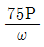
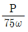
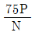
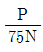
(정답률: 52%)
4. 조종사가 5000m의 상공을 일정 속도로 낙하산을 이용하여 하강하고 있다. 조종사의 무게 90㎏, 낙하산 지름 6m 항력계수 2.0일 때 속도는 몇 m/s인가? (단, 공기의 밀도 1.0㎏/m3, g : 중력가속도이다.)
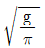
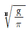
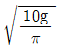
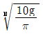
(정답률: 77%)
5. 실제유체와 이상유체를 구분하는 주된 요인은?
- 운동에너지
- 점성
- 유체의 압력
- 유체의 속도
(정답률: 79%)
6. 비행기에 발생하는 항력 중 충격파가 생기는 초음속 흐름에서만 발생하는 것은?
- 압력항력
- 마찰항력
- 유도항력
- 조파항력
(정답률: 89%)
7. 병렬식 회전날개 헬리콥터에 대한 설명으로 틀린 것은?
- 수평 비행 시 유해항력이 크다.
- 세로안정성이 좋지 않기 때문에 고리날개를 가진다.
- 무게 중심 이동범위가 제한되기 때문에 대형기에만 적합하다.
- 회전날개 상호간의 충돌을 피하기 위한 장치를 설치해야 할 경우가 있다.
(정답률: 37%)
8. 항력을 증가 시킬 목적으로 사용하는 장치가 아닌 것은?
- 슬롯(Slot)
- 드래그슈트(Drag Chute)
- 에어브레이크(Air brake)
- 역추력장치(Thrust reverser)
(정답률: 83%)
9. 날개의 받음각(α) 변화에 따른 항력계수(CD) 변화를 옳게 설명한 것은?
- α가 커지면 CD는 증가하고 실속각을 넘으면 급격히 감소한다.
- α가 커지면 CD는 감소하고 실속각을 넘으면 급격히 증가한다.
- α가 커지면 CD는 증가하고 실속각을 넘으면 급격히 증가한다.
- α가 커지면 CD는 감소하고 실속각을 넘으면 급격히 감소한다.
(정답률: 47%)
10. 동적 세로안정의 단주기 운동 발생 시 조종사가 대처해야 하는 방법으로 가장 옳은 것은?
- 즉시 조종간을 작동시켜야 한다.
- 받음각이 작아지도록 조작해야 한다.
- 조종간을 자유롭게 놓아야 한다.
- 비행 불능상태이므로 즉시 탈출하여야 한다.
(정답률: 85%)
11. 절대 온도 290K는 약 몇 인가?
- 11℃
- 17℃
- 283℃
- 312℃
(정답률: 68%)
12. 헬리콥터 플래핑 힌지(flapping hinge)의 주된 목적은?
- 회전날개의 깃이 회전면 안에서 앞뒤로 움직일 수 있도록 한다.
- 회전날개의 깃이 회전면 안에서 앞뒤 방향으로 과도하게 움직이는 것을 방지한다.
- 회전날개 면에서 양력 불균형 현상을 제거한다.
- 회전날개의 깃이 상하 방향으로 움직이는 것을 방지한다.
(정답률: 62%)
13. 어떤 물체가 평형상태로부터 벗어난 뒤에 다시 평형 상태로 되돌아가려는 경향을 의미하는 것은?
- 가로안정
- 세로안정
- 정적안정
- 동적안정
(정답률: 76%)
14. 다음 중 윗면과 아랫면이 대칭을 이루는 NACA 표준 날개는?
- NACA 0015
- NACA 1115
- NACA 2415
- NACA 4415
(정답률: 60%)
15. 정상 수평선회하는 비행기의 경사각이 45도일 때 하중배수는 얼마인가?
- 1
- √2
- √3
- √4
(정답률: 80%)
16. X선이나 감마선 등과 같은 방사선이 공간이나 물체를 투과하는 성질을 이용한 비파괴검사는?
- 와전류탐상검사
- 초음파탐상검사
- 방사선투과검사
- 자분탐상검사
(정답률: 85%)
17. 다음 중 항공기의 지상 취급과 가장 관계가 먼 것은?
- 바퀴에 촉을 괴는 일
- 착륙장치에 안전핀을 꽂는 일
- 항공기를 이동시키기 위하여 견인하는 일
- 항공기의 수요에 따른 운항노선을 결정하는 일
(정답률: 91%)
18. 측정물의 평면 상태검사, 원통 진원검사 등에 이용되는 측정기기는?
- 높이 게이지
- 마이크로미터
- 깊이 게이지
- 다이얼 게이지
(정답률: 87%)
19. 베어링의 육안검사로 식별 가능한 결함 중에서 베어링이 미끄러지면서 접촉하는 표면의 윤활상태가 좋지 않을 대 생기며, 표면에 밀려 다른 부분에 층이 지는 형태의 결함은?
- 균열(Crack)
- 닉킹(Nicking)
- 밀림(Galling)
- 스코어링(Scoring)
(정답률: 77%)
20. 두께가 0.064in 이하인 판재를 성형할 때 균열을 방지하기 위해 릴리프 홀(Relief hole)을 뚫을 대 홀 지름의 기준은 몇 in인가?
- 1/8
- 1/4
- 1/2
- 1
(정답률: 63%)
2과목: 항공기정비
21. 밑줄 친 부분의 의미로 옳은 것은?
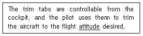
- 고도
- 자세
- 방향
- 위치
(정답률: 76%)
22. 다음 중 기관검사의 방법이 아닌 것은?
- 육안 검사
- 온도 검사
- 치수 검사
- 윤활유 분광 시험 검사
(정답률: 41%)
23. 항공기의 배관 재료 중 내식성이 우수하고 내열성이 강하며 인장강도가 높고 두께가 얇아 항공기의 무게를 줄일 수 있어 많이 사용되는 것은?
- 주철관
- 알루미늄 튜브
- 경질염화비닐 튜브
- 스테인리스 강관
(정답률: 64%)
24. 그림과 같은 종류의 너트 명칭은?
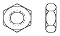
- 캐슬너트
- 평너트
- 체크너트
- 캐슬전단너트
(정답률: 60%)
25. 다음 중 실린더 게이지에 대한 설명으로 옳은 것은?
- 칼마형 게이지는 지름이 작고 깊은 구멍의 지름을 측정할 수 있다.
- 아메스형 게이지는 블록 게이지를 측정할 실린더 안에 직접 밀어 넣을 수 있다.
- 칼마형 게이지는 다이얼 게이지를 측정할 실린더 안에 직접 밀어 넣을 수 있다.
- 아메스형 게이지는 두께 게이지를 측정할 실린더 안에 직접 밀어 넣을 수 있다.
(정답률: 38%)
26. 다음 중 오프셋 박스 렌치는?
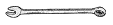
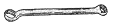
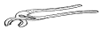
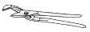
(정답률: 67%)
27. 항공기나 그 부품 및 장비의 손상이나 기능불량 등을 원래의 상태로 회복시키는 작업에 해당되는 것은?
- 항공기 점검
- 항공기 검사
- 항공기 개조
- 항공기 수리
(정답률: 92%)
28. 작동유(Hydraulic fluid)가 항공기 타이어(Aircraft tire)에 묻어있어서 이것을 제거할 대 가장 적합한 세척제는?
- 알코올
- 솔벤트
- 휘발유
- 비눗물과 더운물
(정답률: 76%)
29. 다음 ( ) 안에 알맞은 내용은?
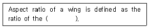
- wing span to the wing root
- wing span to the wing span
- wing span to the mean chord
- square of the chord to the wing span
(정답률: 63%)
30. 기체 수리 시 판재를 평면 설계할 때, 판재를 정확히 수직으로 구부리기 위하여 추가적으로 필요한 일정한 길이를 무엇이라 하는가?
- 세트백
- 굽힘여유
- 최소 굽힘반지름
- 스프링백
(정답률: 63%)
31. 항공기 기체의 판금 구조재 수리에 관한 일반 원칙으로 틀린 것은?
- 수리 전 최초의 구조재와 동일한 강성과 강도를 갖고 있어야 한다.
- 수리 전 최초의 구조재와 동일한 재질이어야 한다,
- 수리 전 최초의 구조재보다 더 두꺼운 판재를 사용한다.
- 균열에 대해서는 항상 정지 드릴을 뚫어 더 이상의 균열이 진행되지 않도록 조치한 후 작업한다.
(정답률: 83%)
32. 항공기 방식작업 중에 처리 용액을 입으로 삼켰을 경우 응급처리로 가장 옳은 것은?
- 석회수 등을 우유에 타서 마신 후에 여러 컵의 물을 마신 다음 의사의 진료를 받는다.
- 붕산수를 마시고 15분 후에 물을 마신 다음 의사의 진료를 받는다.
- 오염장소를 피하여 신선한 공기를 들이마신 후 필요하면 산소호흡을 하면서 즉시 의사의 진료를 받는다.
- 비눗물과 물을 섞어 마신 후 재차 붕산수를 마시고 즉시 의사의 진료를 받는다.
(정답률: 57%)
33. 소화기의 종류에 따른 취급방법에 대한 설명으로 가장 옳은 것은?
- 물펌프 소화기 : A급 화재의 진화에 사용되며 전기 화재에 사용되기도 한다.
- 이산화탄소 소화기 : B급 및 C급 화재의 진화에 사용되고, 취급 시 인체에 묻어도 무해하다.
- 브로모클로로메탄 소화기 : D급 화제에만 사용되고 밀폐된 공간에서 취급해야 한다.
- 분말 소화기 : B급 및 C급 화재의 진화에 사용되며 분말형태의 소화제를 실린더 속에서 가압상태로 보관하여 사용한다.
(정답률: 61%)
34. 항공기 정비에서 오버홀에 대한 설명이 아닌 것은?
- 시한성 정비 방법이다.
- 신뢰성 정비 방법이다.
- 사용시간이 0으로 환원된다.
- 기체와 장비 모두를 대상으로 할 수 있다.
(정답률: 72%)
35. 다음 중 정비 기술정보가 아닌 것은?
- 오버홀 교범(Overhaul manual)
- 작동 교범(Operation manual)
- 정비 교범(Maintenance manual)
- 기체 구조 수리 교범(Structural repair manual)
(정답률: 76%)
36. 가스터빈기관에서 사용되는 윤활유의 구비 조건으로 옳은 것은?
- 인화점이 낮을 것
- 기화성이 높을 것
- 점도지수가 높을 것
- 산화 안정성이 낮을 것
(정답률: 54%)
37. 밸브 지연과 밸브 앞섬은 무엇으로 표시하는가?
- 캠축의 회전속도
- 캠축의 회전각도
- 크랭크축의 회전각도
- 크랭크축과 캠축의 회전각도 차이
(정답률: 36%)
38. 스타팅 바이브레이터(Starting Vibrator)의 구성품이 아닌 것은?
- 릴레이(Relay)
- 콘덴서(Condenser)
- 바이브레이터(Vibrator)
- 브레이커 포인트(Breaker Point)
(정답률: 45%)
39. 다음 중 램제트기관에 대한 설명으로 옳은 것은?
- 기관에 압축기가 장착되어 있다.
- 정지 상태에서 작동이 원활하게 된다.
- 항공용 기관으로 널리 사용되고 있다.
- 작동하려면 비행속도가 약 마하 0.2 이상 되어야 한다.
(정답률: 51%)
40. 다음 중 기관예열(Engine Pre Heat)시 권장 사항으로 틀린 것은?
- 가열 순서는 기관 덮개, 연료라인, 유압라인, 오일라인 기관 기화기의 순서로 한다.
- 가능하면 항공기를 가열된 격납고에 보관하여 예열한다.
- 가열 과정 중에는 반드시 소화기를 비치한다.
- 좋은 상태의 가열기만 사용하며 작동 중 가열기에 재급유를 하지 않는다.
(정답률: 40%)
3과목: 항공기관
41. 왕복기관의 손상된 실린더 배플(baffle)을 수리하고자 한다면 결국 어떤 성능을 향상시키기 위한 것인가?
- 냉각성능
- 연료의 기화성능
- 실린더의 체결성능
- 기관의 반응성능
(정답률: 80%)
42. 충동터빈(Impulse turbine)에 대한 설명으로 옳은 것은?
- 단에서 발생되는 압력저하는 노즐(정익)에서만 일어난다.
- 단에서 발생되는 압력저하는 회전익에서만 일어난다.
- 단에서 발생되는 압력저하는 정익에서 50%, 회전익에서 50%가 일어난다.
- 일반적으로 블레이드 허브부분에서는 반동형을 채택하고, 팁에서는 충동형을 채택한다.
(정답률: 33%)
43. 다음 중 왕복기관의 공기 흡입 계통이 아닌 것은?
- 머플러(Muffler)
- 기화기(Carburetor)
- 공기 덕트(Air duct)
- 흡기 매니폴드(Intake manifold)
(정답률: 60%)
44. 가스터빈기관 작동 중 연소실에 열점(Hot spot)현상이 일어날 대의 고장 원인으로 가장 옳은 것은?
- 연소실의 균열
- 연소실의 냉각작용 이상
- 연료펌프의 결함
- 연료노즐의 분사각도 결함
(정답률: 37%)
45. 초음속 항공기에 사용되는 흡입 덕트로 가장 적절한 형태는?
- 수축형
- 확산형
- 수축-확산형
- 일자형
(정답률: 64%)
46. 가스터빈기관의 소음에 대한 설명 중 틀린 것은?
- 소음의 크기는 배기가스 속도의 6~8제곱에 비례한다.
- 소음의 원인은 주로 배기소음이다.
- 배기소음은 주로 고주파 음으로 되어 있다.
- 소음은 배기노즐 지름의 제곱에 비례한다.
(정답률: 62%)
47. 연료흐름에 따른 기관계통의 순서가 옳게 나열된 것은?
- 주연료펌프 → 여과기 → P&D밸브 → FCU → 연료매니폴드 → 연료노즐
- 주연료펌프 → FCU 여과기 → 연료매니폴드 → P&D밸브 → 연료노즐
- 주연료펌프 → 여과기 → FCU → P&D밸브 → 연료매니폴드 → 연료노즐
- 주연료펌프 → 여과기 → P&D밸브 → 연료매니폴드 → FCU → 연료노즐
(정답률: 55%)
48. 가스터빈기관 운전 시 추력조절에 대한 설명으로 옳은 것은?
- 시동 후 아이들(Idle)속도에서 일정시간 이상 작동해야 한다.
- 출력변경을 할 대는 최대한 신속하게 추력레버를 조작하여 가스패스의 소비를 원활히 해야 한다.
- 기관의 냉각을 위하여 최대 출력까지 급가속을 해야 한다.
- 가스패스의 손상을 방지하기 위해서 일정시간 급가속을 유지해야 한다.
(정답률: 73%)
49. 왕복기관에서 발생하는 노킹현상의 원인이 아닌 것은?
- 부적절한 연료를 사용할 때
- 실린더 헤드가 과냉 되었을 때
- 혼합가스의 화염전파속도가 느릴 때
- 흡입공기의 온도와 압력이 너무 높을 때
(정답률: 45%)
50. 왕복기관에 사용되는 물분사에 대한 설명으로 옳은 것은?
- 일명 디토네이션 방지 분사라고도 한다.
- 압축기 입구에 물과 알코올의 혼합물을 분사 시킨다.
- 배기노즐에 물을 분사하여 기관을 냉각시킨다.
- 기관이 낼 수 있는 최소 출력을 내게 함으로써 긴 활주로에서 이륙 할 때 주로 사용한다.
(정답률: 35%)
51. 표준 오토 사이클은 어떤 과정으로 이루어지는가?
- 2개의 단열과정과 2개의 정압과정
- 2개의 단열과정과 2개의 정적과정
- 2개의 정압과정과 2개의 등온과정
- 2개의 정압과정과 2개의 정적과정
(정답률: 47%)
52. 지름이 140㎜인 피스톤에 55kgf/의 가스압력이 작용하면 피스톤에 미치는 힘은 약 몇 kgf인가?
- 6467
- 7467
- 8467
- 9467
(정답률: 35%)
53. 항공용 왕복기관에서 윤활유를 채취하여 윤활유 분광시험을 한 결과 알루미늄합금 입자가 검출되었다면 어느 부분에 이상이 있는 것인가?
- 마스터 로드 실의 파손
- 피스톤 및 기관내부의 결함
- 밸브 스프링 및 베어링의 파손
- 부싱 및 밸브가이드 부분의 마멸
(정답률: 44%)
54. 단위 시간에 할 수 있는 일의 능력을 표현한 것으로 틀린 것은?
- 동력
- 일률
- 마력
- 효율
(정답률: 35%)
55. 일반적으로 기관의 분류 방법으로 사용되지 않는 것은?
- 냉각 방법에 의한 분류
- 실린더 배열에 의한 분류
- 실린더의 재질에 의한 분류
- 행정(cycle)수에 의한 분류
(정답률: 81%)
56. 가스의 누설방지를 위한 피스톤링 조인트의 위치를 결정 하는 방법으로 옳은 것은?
- 90° ÷ 링의 수
- 180° ÷ 링의 수
- 270° ÷ 링의 수
- 360° ÷ 링의 수
(정답률: 61%)
57. 대형 가스터빈기관에 일반적으로 많이 사용되는 시동기(Starter)는?
- 블리드(Bleed) 시동기
- 관성형(Inertia type) 시동기
- 탄약형(Cartridge type) 시동기
- 뉴매틱형(Pneumatic type) 시동기
(정답률: 59%)
58. 항공기용 왕복기관을 시동할 때, 직접 연료를 분사 시켜 농후한 혼합가스를 만들어 줌으로써 시동을 쉽게 하는 장치는?
- 프라이머(Primer)
- 부스터펌프(Booster pump)
- 다이내믹 댐퍼(Dynamic damper)
- 인덕션 바이브레이터(Induction vibrator)
(정답률: 64%)
59. 터보팬 기관에서의 바이패스 비를 옳게 설명한 것은?
- 흡인된 전체 공기유량과 배출된 전체 공기유량과의 비
- 압축기를 통과한 공기의 유량과 터빈을 통과한 공기 유량과의 비
- 팬에 흡인된 공기의 유량과 팬으로부터 유출된 공기 유량과의 비
- 가스발생기를 통과한 공기의 유량과 팬을 통과한 공기 유량과의 비
(정답률: 29%)
60. 공기 중에서 프로펠러가 1회전할 때 실제로 전진하는 거리를 무엇이라 하는가?
- 유효피치
- 기하학적 피치
- 턴 디스턴스
- 프로펠러 슬립
(정답률: 81%)